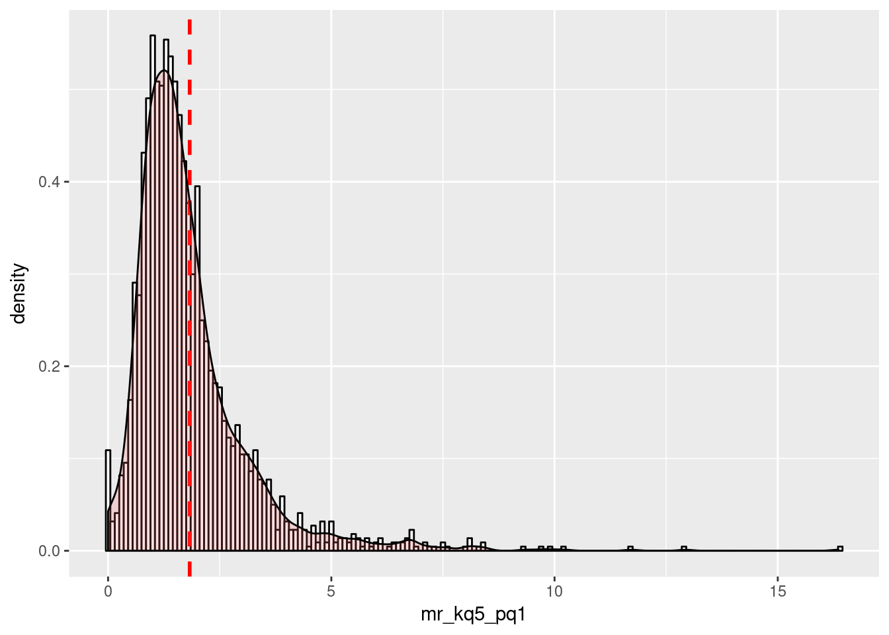

Data Exercise
library(tidyverse)Importing data
url <- 'http://www.equality-of-opportunity.org/data/college/mrc_table1.csv'
ratings <- readr::read_csv(url)## Parsed with column specification:
## cols(
## super_opeid = col_integer(),
## name = col_character(),
## czname = col_character(),
## state = col_character(),
## par_median = col_integer(),
## k_median = col_integer(),
## par_q1 = col_double(),
## par_top1pc = col_double(),
## kq5_cond_parq1 = col_double(),
## ktop1pc_cond_parq1 = col_double(),
## mr_kq5_pq1 = col_double(),
## mr_ktop1_pq1 = col_double(),
## trend_parq1 = col_double(),
## trend_bottom40 = col_double(),
## count = col_double()
## )But the column names are not useful:
ratings %>% colnames## [1] "super_opeid" "name" "czname"
## [4] "state" "par_median" "k_median"
## [7] "par_q1" "par_top1pc" "kq5_cond_parq1"
## [10] "ktop1pc_cond_parq1" "mr_kq5_pq1" "mr_ktop1_pq1"
## [13] "trend_parq1" "trend_bottom40" "count"Exploring CUNY
Unfortunately, there is no yes/no column that tells us if a school is in CUNY or not.
Let’s start by a simple filter then. We will use the
ratings %>%
filter(stringr::str_detect(name, 'Baruch'))## # A tibble: 1 x 15
## super_opeid name czname state par_median k_median par_q1 par_top1pc
## <int> <chr> <chr> <chr> <int> <int> <dbl> <dbl>
## 1 7273 CUNY Ber… New Y… NY 42800 57600 27.6 0.559
## # ... with 7 more variables: kq5_cond_parq1 <dbl>,
## # ktop1pc_cond_parq1 <dbl>, mr_kq5_pq1 <dbl>, mr_ktop1_pq1 <dbl>,
## # trend_parq1 <dbl>, trend_bottom40 <dbl>, count <dbl>So maybe the way to get the CUNY schools is to filter for “CUNY”! Let’s give that a try:
ratings %>%
filter(stringr::str_detect(stringr::str_to_upper(name), 'CUNY'))## # A tibble: 16 x 15
## super_opeid name czname state par_median k_median par_q1 par_top1pc
## <int> <chr> <chr> <chr> <int> <int> <dbl> <dbl>
## 1 7273 CUNY Be… New Y… NY 42800 57600 27.6 0.559
## 2 2688 City Co… New Y… NY 35500 48500 32.5 0.234
## 3 7022 CUNY Le… New Y… NY 32500 40700 36.7 0
## 4 2693 CUNY Jo… New Y… NY 41800 45200 27.2 0.0979
## 5 2687 CUNY Br… New Y… NY 52200 44300 23.2 0.786
## 6 2689 CUNY Hu… New Y… NY 49800 44400 21.2 0.561
## 7 2690 CUNY Qu… New Y… NY 63300 48200 20.1 1.27
## 8 4759 CUNY Yo… New Y… NY 36500 36400 30.7 0.0612
## 9 8611 CUNY, H… New Y… NY 26700 27700 45.8 0.0506
## 10 2691 CUNY Bo… New Y… NY 33500 31900 35.1 0.103
## 11 10051 CUNY La… New Y… NY 33800 31800 36.8 0.0332
## 12 2692 CUNY Br… New Y… NY 29700 28700 41.0 0.0917
## 13 2697 Queensb… New Y… NY 42200 32400 27.6 0.0634
## 14 10097 CUNY Me… New Y… NY 35100 30900 30.5 0.137
## 15 2694 Kingsbo… New Y… NY 40700 31300 27.1 0.161
## 16 2698 College… New Y… NY 73500 41200 14.3 0.355
## # ... with 7 more variables: kq5_cond_parq1 <dbl>,
## # ktop1pc_cond_parq1 <dbl>, mr_kq5_pq1 <dbl>, mr_ktop1_pq1 <dbl>,
## # trend_parq1 <dbl>, trend_bottom40 <dbl>, count <dbl>There are more than 16 schools in CUNY but this will work for now.
Let’s order CUNY schools by their mobility ratings, highest to lowest:
ratings %>%
filter(stringr::str_detect(stringr::str_to_upper(name), 'CUNY')) %>%
select(name, mr_kq5_pq1) %>%
arrange(-mr_kq5_pq1) %>%
head(10)## # A tibble: 10 x 2
## name mr_kq5_pq1
## <chr> <dbl>
## 1 CUNY Bernard M. Baruch College 12.9
## 2 City College Of New York - CUNY 11.7
## 3 CUNY Lehman College 10.2
## 4 CUNY John Jay College Of Criminal Justice 9.69
## 5 CUNY Brooklyn College 8.07
## 6 CUNY Hunter College 7.54
## 7 CUNY Queens College 7.14
## 8 CUNY York College 6.82
## 9 CUNY, Hostos Community College 6.50
## 10 CUNY Borough Of Manhattan Community College 6.14Visualizing the data
Let’s begin by summarizing the distribution of the mobility rates.
ratings %>%
ggplot(aes(x=mr_kq5_pq1)) +
geom_histogram(aes(y=..density..),
binwidth=.1,
color="black",
fill="white") +
geom_vline(aes(xintercept=mean(mr_kq5_pq1, na.rm=T)), # Ignore NA values for mean
color="red", linetype="dashed", size=1) +
geom_density(alpha=.2, fill="#FF6666")
So what were the schools that were in the top 50 of ratings?
library(forcats)
ratings %>%
arrange(-mr_kq5_pq1) %>%
select(name, mr_kq5_pq1) %>%
head(50) %>%
ggplot(aes(fct_reorder(as.factor(name), mr_kq5_pq1), mr_kq5_pq1)) +
geom_bar(stat='identity') +
labs(title="Mobility rate of top colleges") +
xlab('') +
ylab('') +
geom_text(aes(label=sprintf('%0.2f', mr_kq5_pq1)),
hjust=1.5,
vjust=0.25,
size=2.5,
position = position_dodge(width = 1),
colour="white",
fontface = "bold",
inherit.aes = TRUE) +
coord_flip()